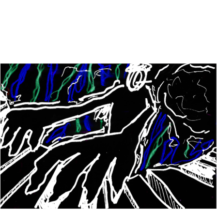
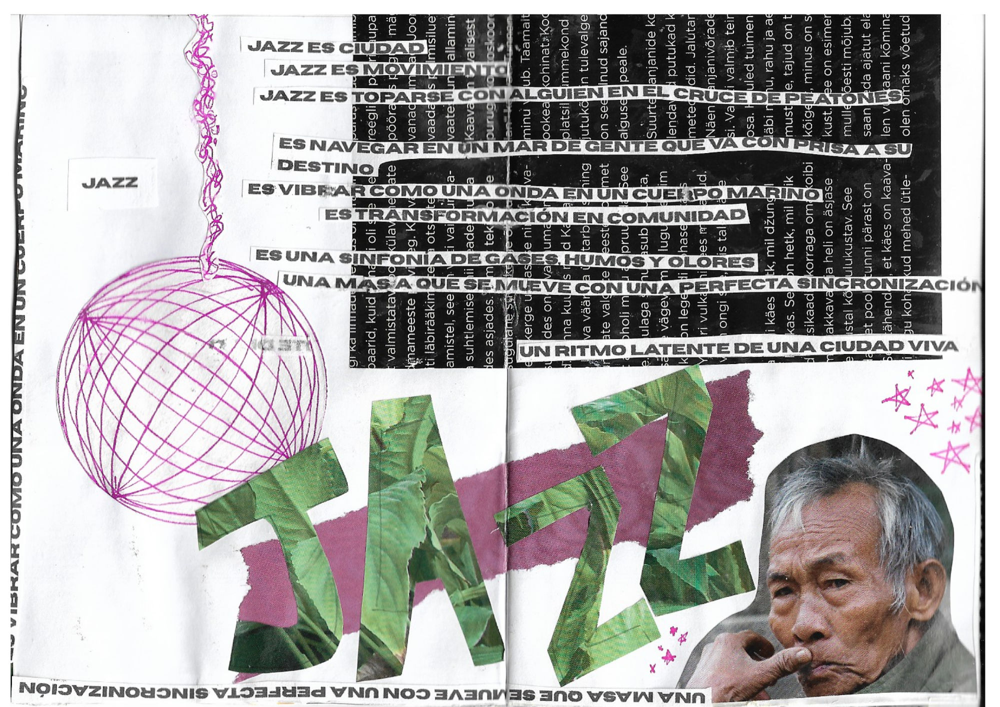
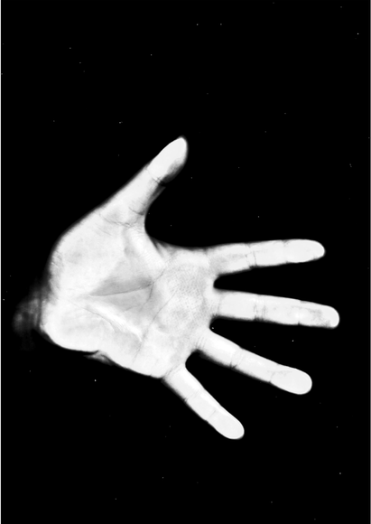
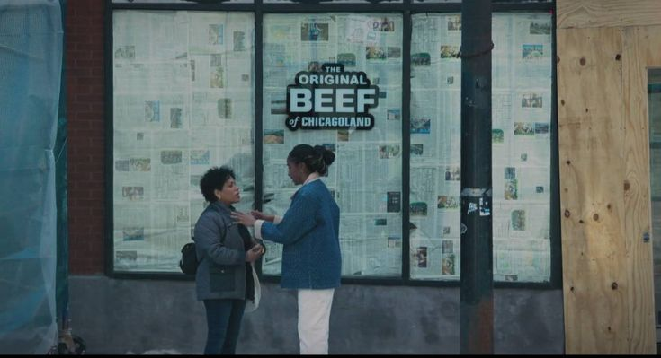
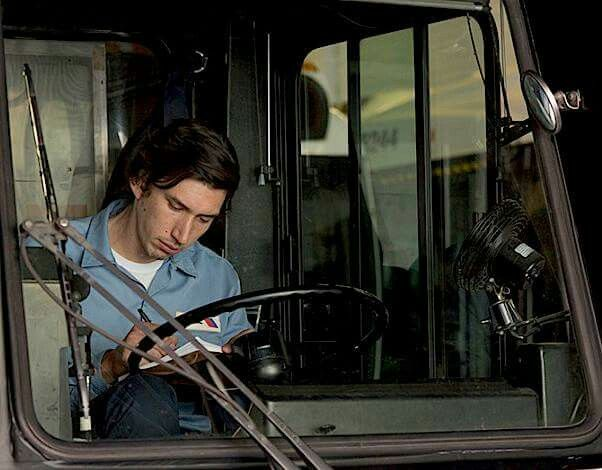

DESORDEN SOCIAL
DESORDEN SOCIAL
DESORDEN SOCIAL
DESORDEN SOCIAL
DESORDEN SOCIAL
DESORDEN SOCIAL
DESORDEN SOCIAL
DESORDEN SOCIAL
DESORDEN SOCIAL
DESORDEN SOCIAL
DESORDEN SOCIAL
DESORDEN SOCIAL
DESORDEN SOCIAL
DESORDEN SOCIAL
DESORDEN SOCIAL
DESORDEN SOCIAL
DESORDEN SOCIAL
DESORDEN SOCIAL
DESORDEN SOCIAL
DESORDEN SOCIAL
DESORDEN SOCIAL
DESORDEN SOCIAL
DESORDEN SOCIAL
DESORDEN SOCIAL
DESORDEN SOCIAL
DESORDEN SOCIAL
DESORDEN SOCIAL
DESORDEN SOCIAL
DESORDEN SOCIAL
DESORDEN SOCIAL
DESORDEN SOCIAL
DESORDEN SOCIAL
DESORDEN SOCIAL
DESORDEN SOCIAL
DESORDEN SOCIAL
DESORDEN SOCIAL
DESORDEN SOCIAL
DESORDEN SOCIAL
DESORDEN SOCIAL
nació en gran parte de mi obsesión con las zines
de los 90. Me mueve pensar en chicas haciendo revistas
en sus habitaciones, fotocopiándolas y pasándoselas
unas a otras; hablando de feminismo, punk,
Guerrilla Girls y de aquello que necesitaban poner
en circulación.
Supongo que me interesa precisamente eso:
qué ocurre cuando una idea pasa de una persona
a otra. Yo también vivo entrando en rabbit holes.
Ahora mismo hay bastante Agnès Varda y Patti Smith
dando vueltas por mi cabeza. Dentro de unas semanas
probablemente será otra cosa.
DESORDEN SOCIAL es una revista colectiva.
Cualquier persona que quiera participar puede dejar
una idea, una referencia, una imagen, una canción,
una pintura, un texto o simplemente algo que le haya
despertado curiosidad.
A partir de ahí se van creando túneles de pensamiento,
alimentados por nuevos nudos que otras personas van
sumando. Una idea lleva a otra, esa a otra distinta,
y poco a poco se construye una red de intereses
compartidos. Por eso la revista también toma forma
de archivo: un archivo de todo aquello que nos interesa,
de las cosas en las que queremos profundizar y de esos
rabbit holes en los que entramos casi sin darnos cuenta.
Dentro del mundo de las baterías portátiles,
los cargadores inalámbricos y los dispositivos
que cada vez necesitan menos de nosotros para
funcionar, las pilas siguen existiendo.
Parecen arcaicas. Utilizarlas hoy tiene algo
de anacrónico: abrir un compartimento,
introducir un pequeño cilindro metálico y cerrar.
Entonces ocurre algo extraño.
Un objeto muerto cobra vida.
Y dejamos de pensar en la pila.
Quizá precisamente por eso la pila podría ser hoy
lo que la sopa Campbell fue para Warhol:
un objeto tan cotidiano que hemos dejado de mirarlo.
La Campbell condensaba una civilización fascinada
por la producción, la repetición y el consumo.
La pila podría condensar otra:
una civilización fascinada por la disponibilidad
absoluta.
Pero hay algo escondido dentro de ella.
La pila desaparece dentro del objeto para que
el objeto pueda parecer autónomo.
El mando funciona. El juguete se mueve.
La cámara dispara. El reloj continúa.
No vemos la energía; vemos únicamente sus efectos.
¿Cuántas cosas de nuestra época funcionan
exactamente así?
Pulsamos una pantalla y algo sucede.
Hablamos con una inteligencia artificial y responde.
Guardamos una fotografía en una nube que no podemos ver.
Generamos una imagen en segundos.
La tecnología parece ocurrir en ninguna parte.
Pero ocurre en alguna parte.
Y consume algo.
La pila tiene una cualidad casi incómoda:
no puede fingir que esto no es así.
Su vida está escrita desde el principio.
Tiene una cantidad determinada de energía y,
por tanto, una cantidad determinada de tiempo.
Cada segundo de funcionamiento es un segundo
menos que le queda.
Una pila no contiene solamente energía.
Contiene un límite.
Y quizá sea precisamente esto lo que resulta extraño
de ella cuando la colocamos junto a las tecnologías
contemporáneas. Frente a una IA,
la experiencia es casi la contraria.
La posibilidad parece infinita.
Pregunta otra cosa. Genera otra cosa.
Empieza de nuevo.
No hay un pequeño cilindro que podamos sacar
y sostener en la mano y decir:
aquí está el límite de todo esto.
¿Dónde está entonces?
¿Dónde termina la energía que hace posible
una inteligencia artificial? ¿Qué aspecto tiene?
¿Dónde está el objeto que contiene el tiempo
que le queda? ¿Qué sucede cuando se agota?
Nos hemos acostumbrado tanto a que la tecnología
oculte sus condiciones materiales que quizá
hemos empezado a confundir la ausencia
de un límite visible con la ausencia
de un límite real.
La pila hace lo contrario.
Se esconde para hacer funcionar una máquina,
pero al mismo tiempo revela aquello que la máquina
intenta ocultar: que toda vida necesita energía,
que toda energía tiene un coste
y que todo funcionamiento tiene un final.
Quizá por eso resulta tan extraña hoy.
No es un objeto del pasado.
Es un objeto que todavía sabe algo
que nosotros hemos olvidado.

A veces, viendo reels de personas limpiando alfombras
—ya saben, esas alfombras completamente destruidas,
con barro y suciedad hasta la médula—,
empiezo a pensar:
¿por qué están limpiando una alfombra tan fea?
¿qué tuvo que pasar para que llegara a ese estado?
¿cómo llegó a estar así?
¿no valdría más la pena comprar una nueva y ya?
¿para quién estarán limpiando esa alfombra?
Luego deslizo el dedo.
Y procedo a ver el siguiente vídeo.

en búsqueda del amor

Hay algo que me molesta: que me hayan inculcado
que el amor se encuentra.
Ahora que lo pienso, me doy cuenta de que quizá
no podía estar más equivocada. ¿Cómo algo tan
complejo y complicado de tener va a conseguirse
así, por arte de magia? Cada vez me convence más
la idea de que el amor, como casi todo lo que
merece la pena, se trabaja. Y después, quizás,
se manifiesta como fruto de ese esfuerzo.
Desde pequeños nos enseñan que un día, de repente,
a la princesa se le presenta su príncipe azul y
los dos viven felices para siempre. Yo he tenido
esa idea metida en la cabeza toda mi vida.
“Cuando menos te lo esperes, llegará el amor.”
Estoy harta de escucharla.
Porque empiezo a pensar que el amor no viene así.
¿Entonces cómo viene?
Siento que estoy buscando el amor por todas partes.
Cruzo la calle y, por alguna razón, espero que aparezca
en el paso de peatones como una brisa de verano.
Estoy comiendo y, cuando se me caen las servilletas
y salen volando, una parte de mí todavía espera que
sea el principio de algo. Que alguien las recoja.
Que nuestras manos se encuentren. Que nos miremos.
Que ahí empiece mi encuentro fortuito con el amor
de mi vida.
Voy por la vida buscando pequeñas grietas por las que
pueda colarse una historia de amor. En una cafetería,
en el autobús, en una fiesta, en una mirada que dura
un segundo más de lo normal. Espero que cualquier
desconocido pueda convertirse, de repente, en alguien.
Como si el amor estuviera escondido en alguna esquina
de la ciudad y solo necesitara que yo pasara por allí
en el momento adecuado.
Y qué absurdo.
Porque digo que ya no creo en la idea de encontrar
el amor, pero sigo comportándome como si estuviera
a punto de encontrarlo en cualquier parte.
Y entonces empiezo a preguntarme por qué.
¿Será que no soy lo suficientemente guapa, interesante
o lista? ¿O será que la idea de que algún día aparecerá
alguien y simplemente lo sabremos es ficticia?
Quizá el problema está en que llevo toda la vida esperando
encontrar el amor, cuando tal vez el amor nunca fue algo
que encontrar.
Hay tantas personas a mi alrededor. Tantas posibilidades,
tantos encuentros, tantas vidas cruzándose constantemente.
Y, aun así, nadie ha sentido eso por mí.
Quizá debería dejar de buscarlo.
Pero no creo que dejar de buscarlo signifique convencerme
de que no necesito a nadie. No creo que quererme a mí misma
tenga que hacer desaparecer las ganas de que alguien me quiera.
Puedo estar bien conmigo misma y, aun así, querer compartir
mi vida con alguien. Una cosa no invalida la otra.
Y quizá eso es lo que más me cuesta admitir:
que no sé si quiero dejar de querer que ocurra.
Pero incluso si quisiera, no sé cómo hacerlo.
Podría obligarme a ponerme anteojeras, como un caballo
cruzando una carretera, y aun así seguiría mirando de reojo.
No es que esté pensando constantemente en encontrar a alguien.
Hay días en los que ni siquiera me acuerdo. Pero nunca consigo
cerrarme del todo a la posibilidad. Nunca llego realmente a
decir: no quiero que pase. Ni siquiera por un momento.
Supongo que hay una parte de mí que sigue esperando.
Así que no sé.
Quizá algún día deje de buscarlo y ocurra aquello que llevo
toda la vida escuchando: que cuando menos te lo esperes,
vendrá.
O quizá no.
Y supongo que esa es la parte que todavía no sé cómo aceptar.
Después de casi un año yendo y
viniendo a la ciudad en bici, cada día
me sentía más afortunada de poder
recorrer los campos que la rodean.
Con estas fotografías he querido
reflejar la sensación que me
transmite; un poco del aire que roza
mi piel mientras que esquivo los
bichos y el polvo que se levanta de
los caminos de tierra.
“Es como cuando, en las películas,
algo atraviesa una escena y todo lo
que toca empieza de repente a
florecer, a prosperar y a encontrar su
propósito.
Me gustó, pero creo que me habría gustado aún más
si hubiera sido un poco menos pasiva en su manera
de tratar a las mujeres.
Don’t get me wrong: Paterson reacciona de
maneras que me sorprenden y me gusta cómo la película
despierta cierta intriga alrededor de la unión de la
comunidad. Hay algo muy bonito en la forma en que
observa a las personas y sus pequeñas rutinas, como
si incluso los encuentros más insignificantes pudieran
esconder una historia detrás.
Pero, al mismo tiempo, siento que las mujeres quedan
demasiado apartadas del plano, o simplemente expuestas
como floreros.
Mientras la veía, no podía dejar de pensar que muchas
de ellas necesitan a un hombre para volverse pertinentes
dentro de la historia. Como si su presencia adquiriera
sentido cuando está relacionada con la vida de alguien más.
Y entonces me preguntaba: ¿puede una mujer simplemente
existir dentro de una película sin que su existencia tenga
que estar justificada por un hombre? ¿Puede tener una vida
interior que no necesitemos ver reflejada en la vida de
otra persona?
Creo que se pueden construir personajes que validen el
punto de vista de una mujer sin convertirlas en una
caricatura ni hacer que terminen existiendo únicamente
en función de los hombres que las rodean.

Y quizá por eso también me fijaba tanto en quién estaba
mirando y quién era mirado.
Paterson es una película que observa constantemente:
las calles, sus vecinos, los pasajeros del autobús,
las conversaciones que parecen no llevar a ninguna parte.
La película encuentra algo en personas que, en principio,
no tendrían ninguna razón para ser importantes.
Las mira. Las escucha. Les concede un espacio.
Y me gusta eso. Me gustan las historias en las que
“no pasa nada”; aquellas en las que todo va bien,
en las que simplemente se muestra una vida normal y
cotidiana, sin las complicaciones extrañas que parecen
necesarias en una película tradicional.
Me gusta que una persona pueda coger el autobús,
escribir un poema, hablar con un desconocido,
volver a casa y que eso sea suficiente para
construir una historia.
los encuentros más
insignificantes
pueden esconder una
historia detrás.

Pero no sé por qué, durante toda la película,
sentía que algo iba a pasar.
Y luego no pasaba nada.
No estaba completamente en calma. Estaba buscando
constantemente dónde y cuándo todo se iba a arruinar.
Y creo que ahí está una de las cosas que más me
gustaron de Paterson: que me hizo esperar
una ruptura que nunca llegó.
Yo estaba buscando el momento en el que la rutina
dejara de ser rutina, mientras la película seguía
insistiendo en que quizá no tenía que hacerlo.
Quizá no había nada que resolver.
Quizá mirar ya era suficiente.
Lo que más me relajaba era ver a Paterson.
Me parece súper tierno. Era como un osito cariñosito.
Él parece entender algo que yo tardé toda la película
en aceptar: que una vida no necesita convertirse en
una tragedia para ser interesante.